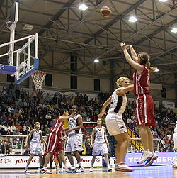
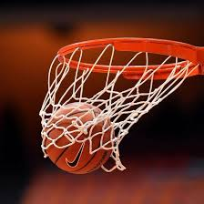
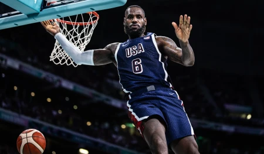

კალათბურთი — გუნდური სპორტის სახეობა, რომელშიც ორი გუნდი, თითოეულში ხუთი მოთამაშით ცდილობს ქულები მოაგროვოს მოწინააღმდეგის კალათში ბურთის მოხვედრით ორგანიზებული წესების მიხედვით. 1891 წელს სპრინგფილდის (მასაჩუსეტსი, აშშ) კოლეჯის ანატომიის მასწავლებელმა ჯეიმზ ნეისმიტმა დაამუშავა პირველი წესები და 1891 წლის დეკემბერს პირველი მატჩიც მოაწყო. მალე ახალი თამაში მთელმა ამერიკამ აღიარა, მოგვიანებით კი დანარჩენმა მსოფლიომაც გაიცნო. კალათბურთის სათამაშოდ იყენებენ მოედანს, რომლის ზომაა 28X15 მ. პირითი ხაზების შუა ადგილას სპეციალურ დგარებში დაყენებულია ფარები, რომლებზეც დამაგრებულია ლითონის რგოლებზე დაკიდებული უძირო ბადეები (კალათები). მანძილი იატაკსა და კალათს შორის 305 სმ-ია, თვითონ ფარის ზომებია 180X105 სმ ან 120X80 სმ, ასევე არსებობს ქუჩის კალათბურთის ფარი და სამოყვარულო კალათბურთის ფარი, რომლის ზომებიც განსხვავებულია. კალათის დიამეტრი 45 სმ-ია. ფარის წინ 625-ანი რადიუსით შემოსაზღვრულია 3-ქულიანი ტყორცნის არე და საჯარიმო ზონა. კალათბურთს თამაშობენ ტყავის, სინთეტიკური ტყავის ან სხვა სინთეტიკური მასალისაგან დამზადებული ბურთით. რომლის გარშემოწირულობა 74,5-78 სმ-ა, ხოლო მასა — 567-650 გრამი. მოთამაშეთა რაოდენობა ყოველ გუნდში 5-5 კაცით განისაზღვრება. თამაშის დროს ჩაგდებული ბურთისათვის გუნდს ერიცხება 2 ან 3 ქულა, ყოველი რეალიზებული საჯარიმო ტყორცნისათვის 1 ქულა, გამარჯვებულია ის გუნდი, რომელიც მეტ ქულას დააგროვებს. შეხვედრა შედგება ოთხი 10-წუთიანი (სუფთა დრო) მეოთხედისგან. მეოთხედებს შორის შესვენება 2 წუთია. გამონაკლისია შესვენება მეორე და მესამე მეოთხედებს შორის, რომელიც 15 წუთი გრძელდება. მატჩის ფრედ დამთვრების შემთხვევაში ინიშნება დამატებითი 5-წუთიანი ტაიმი (ან ტაიმები), გამარჯვებულის გამოვლენამდე. დაშვებულია ნებისმიერი რაოდენობის შეცვლები. ყველა შეცვლილ მოთამაშეს უფლება აქვს დაბრუნდეს მოედანზე.
  